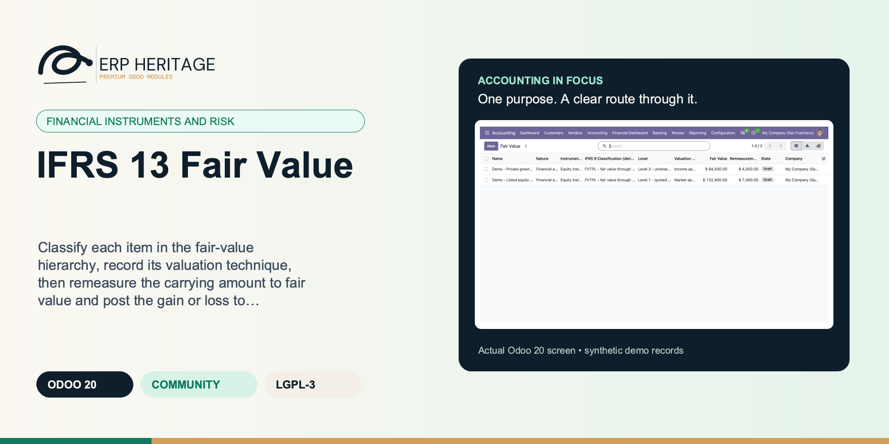
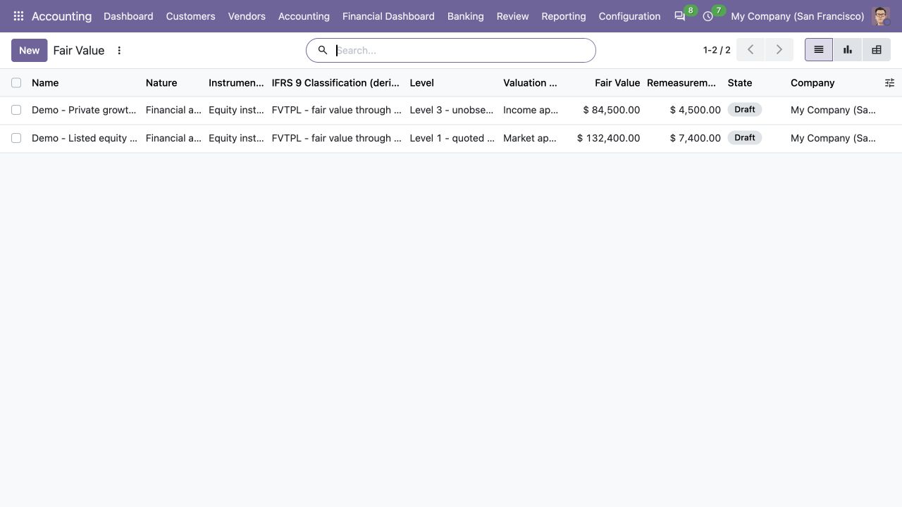
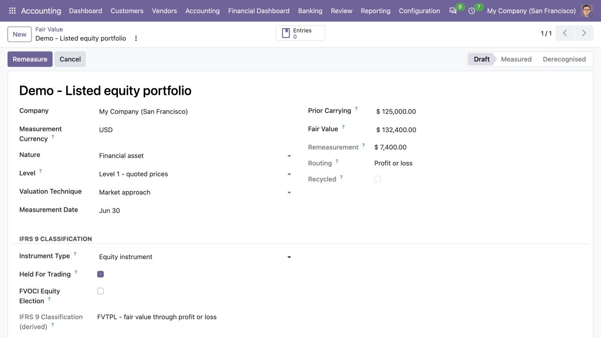
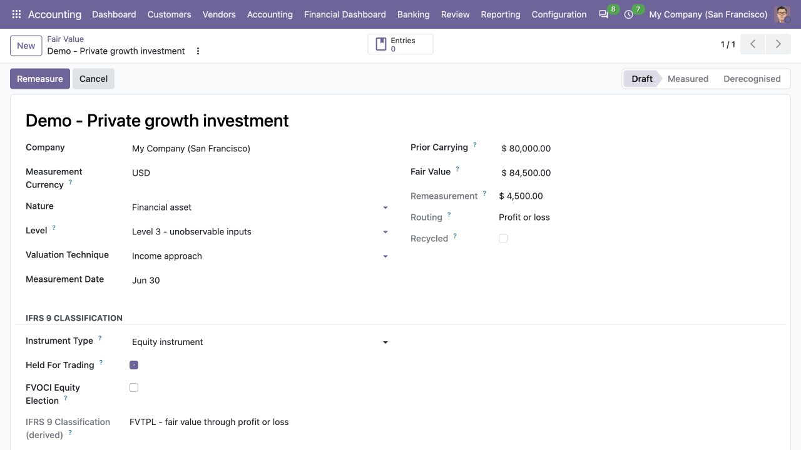
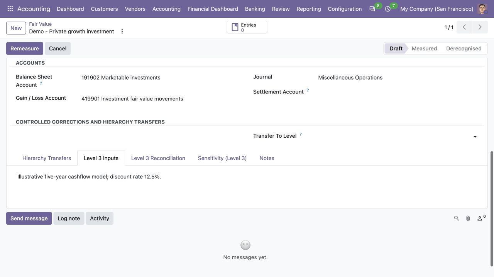
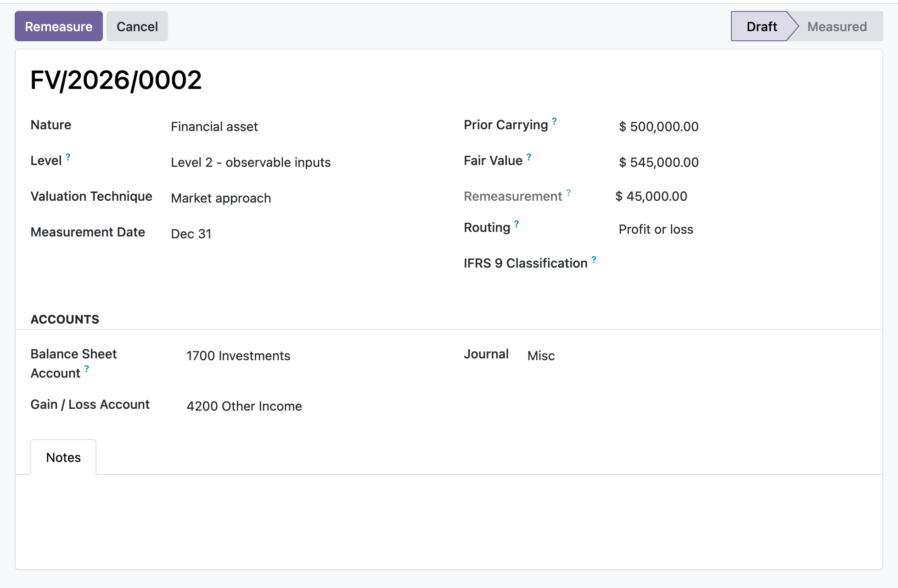

ERP HERITAGE / ODOO 20 COMMUNITY
Classify each item in the fair-value hierarchy, record its valuation technique, then remeasure the carrying amount to fair value and post the gain or loss to profit or loss or OCI in one balanced, sealed journal entry.
LGPL-3 · Odoo 20 · v20.0.1.1.8 · Module guide, setup, workflows and rollout checks
The purpose
This module records and posts fair value under IFRS 13 with IFRS 9 classification. Each item (Fair value item (IFRS 13)) is classified in the three-level hierarchy by input observability, its valuation technique is captured as market, income or cost approach, and for Level 3 the significant unobservable inputs are documented. An IFRS 9.4.1 engine derives the classification from a structured SPPI questionnaire (fixed dates, solely principal and interest, no leverage, no contingent returns) and the business model (hold to collect, hold to collect and sell, other): amortised cost, FVOCI debt, FVOCI equity election or FVTPL, with the P&L/OCI routing derived from the classification rather than chosen by hand, and nonsense combinations blocked (a liability cannot take the equity election, a derivative is always FVTPL, the election is irrevocable once posted). Remeasuring posts the change from the current carrying amount to fair value in one balanced entry and rolls the carrying amount forward. Derecognising posts the disposal entry and, atomically, settles the accumulated OCI reserve: FVOCI debt recycles it to profit or loss, an FVOCI equity election transfers it within equity to retained earnings and never through profit or loss. The Level 3 roll-forward reconciliation (IFRS 13.93(e)) can be ledger-fed from the posted entries and cannot be closed unless its closing balance ties to the fair value, and a per-item sensitivity table (input shock times elasticity) produces the IFRS 13.93(h) quantitative disclosure.
Inside Odoo 20
Captured from Odoo 20 Community using synthetic demonstration records. Configuration screens show the available workflow; external service connectivity still requires the relevant provider setup and validation.

Compare draft Level 1 and Level 3 investments, valuation techniques and proposed remeasurement amounts.
Captured 2026-09-22 from isolated Odoo 20 Community database with synthetic demonstration records. No external submission or live banking activity is represented.

Draft listed equity valuation shows quoted-price measurement and derived profit-or-loss classification.
Captured 2026-09-22 from isolated Odoo 20 Community database with synthetic demonstration records. No external submission or live banking activity is represented.

Draft private investment valuation records Level 3 hierarchy, income approach and proposed movement.
Captured 2026-09-22 from isolated Odoo 20 Community database with synthetic demonstration records. No external submission or live banking activity is represented.

Document illustrative unobservable valuation inputs for the draft Level 3 investment.
Captured 2026-09-22 from isolated Odoo 20 Community database with synthetic demonstration records. No external submission or live banking activity is represented.
Inside this module
The remeasurement leg knows whether the item is a financial asset or a financial liability. A rise in an asset is a gain that increases the balance-sheet carrying amount; a rise in a liability is a loss that increases the liability. The mirror logic for falls is handled too, so the sign is never guessed.
Beyond a simple P&L or OCI switch, items carry an IFRS 9 classification: FVTPL, FVOCI-debt (recycles to profit or loss on derecognition) or FVOCI-equity election (transfers within equity, never recycled). The recycle action clears the accumulated OCI reserve to the correct destination and blocks a profit-or-loss transfer for an equity election.
A missing journal, balance-sheet account, gain/loss or OCI account, a nil remeasurement, or a balance-sheet account that is actually a profit-or-loss account each stop the post with a clear error instead of writing a wrong or unbalanced entry.
For a financial liability the posting mirror is applied: a rise in fair value increases the liability and is a loss, a fall decreases it and is a gain, so the gain/loss sign is not the same as for an asset.
A constrains check refuses a balance-sheet account whose internal group is income or expense, because a profit-or-loss position leg would double-count the remeasurement and misstate the carrying amount.
Once an item is measured, fair value, prior carrying, routing, nature and the three accounts are frozen on write, so a recorded remeasurement cannot be retro-edited out from under its posted journal entry.
An item that has posted a remeasurement cannot be deleted, only cancelled, so its journal entry is never orphaned; items that never posted stay deletable.
Recycling an FVOCI equity reserve refuses to route to a profit-or-loss account and requires an equity destination, enforcing that an equity election is never reclassified to profit or loss.
From input to outcome
Record the instrument and its supported classification with the evidence used for business-model and cash-flow assessment. Gather instrument classification, fair-value hierarchy, carrying value, valuation inputs, reserve accounts and reporting date. Use a representative case with a known expected result so the team can separate configuration decisions from unexpected behaviour. Keep the supporting commercial or accounting evidence available during review.
Enter or prepare the valuation inputs, then compute the change using the selected measurement treatment. Follow the record’s available actions in the order intended by the workflow. Review the selected company, relevant dates and any validation messages before continuing. If the source data changes, reassess the result against the updated evidence.
You open the fair value item for an investment held at 1,000, set the new fair value to 1,200 at the measurement date, and choose OCI routing with an FVOCI equity election. Remeasure posts a balanced entry, 200 debit to the balance-sheet asset and 200 credit to the OCI reserve, then rolls the carrying amount to 1,200 so next quarter measures only the further change. On disposal you recycle the reserve, and because it is an equity election the module transfers it within equity rather than through profit or loss. For a Level 3 holding you also keep the period roll-forward, opening balance through gains, purchases, transfers and settlements to a computed closing balance that you can tie back to the item's fair value.
Review asset versus liability signs and any reserve movement before posting or derecognition. Compare the outcome with the expected treatment for this case and record the reason for any difference that requires follow-up. Give exceptions an owner so they do not disappear inside a period-end spreadsheet.
Preserve valuation evidence and classification judgement; the module records accounting mechanics and does not supply market prices or an external valuation opinion. Include the accepted operating example, configuration choices and unresolved dependencies in the handover. Review them when business policy, source data or the surrounding Odoo applications change.
Product views
Product screenshots supplied with this module. Records and amounts are illustrative; appearance can vary with your configuration and release.

Fair value measurement with the IFRS 13 hierarchy
Business situations
IFRS 13 Fair Value is relevant to investment accountants and valuation reviewers who need to answer this question: How should an instrument’s measured change flow through profit or loss or other comprehensive income? Start with the process that creates the decision, identify its owner and agree what evidence the reviewer needs. A narrow pilot helps the team evaluate the supported workflow using its own accounting data before broadening access.
Use the module’s financial instruments and risk role as one part of a controlled close. Bring the relevant instrument classification, fair-value hierarchy, carrying value, valuation inputs, reserve accounts and reporting date to the review, then explain the result alongside the business event it represents. Establish which outputs become part of the reporting pack and which outstanding matters need a separate accounting decision.
Turn the business question into an acceptance case: How should an instrument’s measured change flow through profit or loss or other comprehensive income? Use one ordinary example and one relevant exception from the supported scope below. Ask the intended operator to prepare it and the reviewer to explain the result. Retain that accepted example with the deployment notes so future changes can be assessed against an understood process.
Before the first result
Confirm that the organisation needs the supported financial instruments and risk process described here. Identify the responsible investment accountants and valuation reviewers and write down the decision they expect the module to support. Use the limitations section to separate shipped behaviour from an integration, professional judgement or operational service that needs another owner.
Prepare instrument classification, fair-value hierarchy, carrying value, valuation inputs, reserve accounts and reporting date. Check the relevant records in the intended company and use dates that match the business event. Resolve missing accounting configuration before evaluating calculated output; plausible-looking totals do not establish that the chosen inputs or policies are correct.
This module declares Accounting Suite Base as part of its installation foundation. Its direct standard-Odoo dependencies are account, mail. Review the actual dependency set in the target database before a rollout, especially where another addon also extends the same accounting models, menus or posting actions.
Define who operates IFRS 13 Fair Value, who reviews unusual results and who maintains configuration. Run the representative workflow below in a test database using the intended users. Confirm that users can reach the work they own and that the reviewer understands the available evidence before moving the process into live operation.
Workflow reference
The core model: nature, hierarchy level, valuation technique, unobservable inputs, measurement date, prior carrying, fair value, computed remeasurement, P&L/OCI routing, IFRS 9 classification and the balance-sheet, gain/loss, OCI and journal fields, with mail thread tracking.
A Level 3 reconciliation model (IFRS 13.93(e)) recording opening balance, gains in P&L and OCI, purchases, issues, sales, settlements and transfers in and out, with a stored computed closing balance and a uniqueness constraint of one reconciliation per item per period.
Remeasure action builds and posts the balanced entry and rolls the carrying amount forward; reserve-recycling action reclassifies the OCI reserve; Reset to Draft action reopens a measured item for the next incremental measurement; Cancel action and related-entry navigation round out the workflow.
Posted moves are linked back to the item and marked sealed, with an ondelete restrict on the move link; a computed OCI reserve balance sums the posted OCI leg movements so the reserve available to recycle is always visible.
Access rights for EH user, manager and read-only auditor groups, global company-isolation record rules on both models, and posting, cancelling, recycling and reopening all gated to the EH Accounting Manager group.
Currency in which the instrument's carrying amount and fair value are stated. Journal entries remain balanced in company currency and preserve this currency in amount currency.
Contractual nature of the financial instrument, driving the IFRS 9 classification engine. Leave empty on non-financial items and on records created before the engine existed; those keep the manual routing behaviour.
IFRS 9.4.1.3: interest is consideration only for the time value of money and the credit risk on the principal amount outstanding.
A debt instrument whose four questionnaire answers all hold passes the solely-payments-of-principal-and-interest test. Equity instruments and derivatives fail by nature.
Held for trading (IFRS 9 Appendix A). Blocks the FVOCI equity election and forces fair value through profit or loss.
The instrument bears a floating (variable) interest rate. Flagged items feed the computed IFRS 7.40 interest-rate sensitivity in the disclosures module at their fair value; the impact of a FVOCI-debt instrument routes to OCI, everything else to profit or loss. Purely informational here: it changes no measurement or posting.
IFRS 9.5.7.5: irrevocable election at initial recognition to present fair-value changes of a non-trading equity instrument in OCI. Cannot be changed once a journal entry has been posted under the elected treatment.
IFRS 9.4.1.5 designation, at initial recognition, of an otherwise amortised-cost or FVOCI debt asset at fair value through profit or loss to eliminate or significantly reduce an accounting mismatch.
Company-currency carrying amount immediately before this measurement. A foreign-currency position needs this historical book amount so IFRS 9.B5.7.2 can split exchange movement from the other FVOCI-debt fair-value movement.
Explicit accounting date for the disposal or settlement. Derecognise will not infer today's date, and will refuse a date that does not match the final fair-value measurement or that precedes posted measurement evidence.
Equity destination for the FVOCI equity-election reserve transfer on derecognition. The transfer stays within equity and never passes through profit or loss (IFRS 9.B5.7.1).
Net movement posted to the OCI / equity account for this item (debit less credit), the reserve available to recycle on derecognition.
Closing requires the computed closing balance to tie exactly to the item's fair value (IFRS 13.93(e)); a closed reconciliation is frozen.
The item's posted entries attributed to this period (Pull Ledger); they feed the gains columns from the ledger instead of a typed figure.
Total gains or losses for the period recognised in profit or loss (a loss is negative). Ledger-fed from the linked journal entries when any are attached; manual otherwise.
Total gains or losses for the period recognised in other comprehensive income (a loss is negative). Ledger-fed from the linked journal entries when any are attached; manual otherwise.
Elasticity of the fair value to the shocked input: the fraction of the relative input shock that flows through to the measurement. 1.0 is a one-for-one linear response.
fair value x shock% x factor: the change in the measurement if the input moved by the shock, the quantitative sensitivity IFRS 13.93(h) asks for.
Illustrative implementation exercise. An investment has a new period-end valuation. Confirm its classification and the route for the resulting movement before entering the fair value. Review whether the record represents an asset or liability and which profit-or-loss or OCI accounts apply. The same increase in a quoted value cannot be interpreted without that context. Use a supported derecognition example to inspect what happens to the recorded reserve, including any applicable recycling treatment. Keep the independent valuation and classification assessment with the case. The module’s calculation and posting history explain the chosen accounting mechanics; they do not establish the market price or approve the investment’s legal classification.
Questions before rollout
It is designed for investment accountants and valuation reviewers. Its central business question is: How should an instrument’s measured change flow through profit or loss or other comprehensive income? The listing describes the shipped operating scope and the decisions that remain with the organisation. Evaluate it against your own records and review process, rather than treating the module name as a promise to cover every scenario in that accounting area.
Have instrument classification, fair-value hierarchy, carrying value, valuation inputs, reserve accounts and reporting date ready, together with the person who owns the related accounting policy. Record the instrument and its supported classification with the evidence used for business-model and cash-flow assessment. A known example makes it possible to check the result and resolve configuration questions before the process is repeated across more records or companies.
Review asset versus liability signs and any reserve movement before posting or derecognition. Keep the relevant source evidence with the output and be explicit about company, date and policy choices. The most useful review asks whether the result follows from the business inputs, not only whether the operation completed without a validation message.
It belongs to the financial instruments and risk family. Its declared custom dependency foundation is Accounting Suite Base. Installing the complete suite also brings other operating and specialist modules; using this focused module should be evaluated against its own dependency list and scope. Optional services still need their own configuration and agreement where applicable.
It does not fetch or feed market prices; you enter the fair value at the measurement date yourself, it does not connect to any pricing or market-data source. Preserve valuation evidence and classification judgement; the module records accounting mechanics and does not supply market prices or an external valuation opinion.
No. IFRS 13 Fair Value provides the specific records, calculations or workflow described in this listing. The organisation remains responsible for its source information, accounting choices, supporting evidence and review. Where the process uses an estimate, a contract assessment or an external service, appoint the appropriate owner before relying on the output.
Scope and requirements
It does not fetch or feed market prices; you enter the fair value at the measurement date yourself, it does not connect to any pricing or market-data source.
It does not build the IFRS 13 sensitivity analysis or the full fair-value disclosure notes; it captures the unobservable inputs and the Level 3 roll-forward, but the narrative disclosures are not generated.
It does not run impairment or expected credit loss; fair-value movement is posted, not credit-loss provisioning.
It posts one item at a time from its own record; there is no bulk portfolio revaluation run across many items in a single action.
It records the remeasurement entry only; it does not compute tax effects or deferred tax on the fair-value change.
Standards references describe the accounting subject addressed by the module. They do not establish certification, statutory filing acceptance or suitability for every jurisdiction. Your finance team owns its assumptions, accounting policies and review.
Installation scope
Odoo installs the following direct dependencies automatically. Additional dependencies can be brought in by those modules. Related modules in the wider catalogue are optional unless they appear in this dependency chain.
Shared reporting engine for the ERP Heritage Odoo 20 Community accounting suite, providing a reproducible report-execution audit log and a move-version result cache. Append-only audit log of every report render with user, timestamp, the full options snapshot, runtime, and a SHA-256 result hash for XLSX and PDF output, plus a multi-company analytic-aware parameterised SQL builder with no raw user input in SQL, a three-tier User/Manager/read-only Auditor privilege model, and a currency-aware XLSX writer. Odoo 20 Community accounting reporting engine, reproducible financial report audit trail, move-version report cache invalidation, multi-company parameterised SQL builder, append-only audit log, read-only auditor role, SHA-256 report hash compliance, currency-aware XLSX export, analytic-aware journal item aggregation.
Included dependency: eh_account_base. The shared reporting engine under the ERP Heritage accounting modules: an append-only render audit log, precise per-company cache invalidation, and a whitelist-only parameterised SQL builder.
Odoo Community dependency required by this module. Its own dependencies and configuration remain part of the installation scope.
Odoo Community dependency required by this module. Its own dependencies and configuration remain part of the installation scope.
Acceptance guide
The following are recommended rollout checks, not claims of additional built-in features. Apply the checks relevant to this module and retain evidence of your own results.
Select a recent, closed period that your finance team understands well. Keep its approved source documents, ledger totals and existing working papers available. Reproduce that period in a staging database before working on current transactions. A familiar period makes differences visible: you can distinguish an opening balance problem from a configuration choice, a timing difference or a genuine defect. Agree which person owns each discrepancy and what evidence will close it. Successful installation is the starting point; a repeatable business outcome is the acceptance criterion.
Write down the output your team needs from this module: a reviewed transaction, an exported file, a reconciled balance, an approved schedule or an operational queue. Identify who prepares it, who reviews it and who relies on it next. Make the scope concrete with one company, one reporting period and a small representative document set. Include an ordinary case and an exception. This keeps the evaluation focused on the business decision instead of the number of available screens, and gives reviewers a consistent way to compare the new workflow with their current process.
Use the Odoo 20 edition of the module and its dependencies together. The manifest defines what Odoo installs automatically; a feature mentioned elsewhere in the wider product family is not automatically included. Review the dependency guide on this page before enabling the complete suite, especially where your deployment also uses Sales, Purchase, Inventory or website components. Confirm that your hosting arrangement accepts custom server modules and their Python requirements. Keep a copy of the installed module versions with your acceptance record so a later update can be checked against the same baseline.
Check the companies, currencies, fiscal periods, journals, accounts and partner records used by your sample. Confirm that account purposes agree with your chart of accounts and that archived records are not being selected inadvertently. Review company-specific settings while the intended company is active. Where a workflow needs bank details, analytic dimensions, product information or payment terms, validate those inputs with their owner. Clean master data reduces repeated exceptions and makes it easier to investigate the exceptions that remain. Keep the preparation list short enough for someone else to repeat it.
Decide which source establishes the opening position before introducing new transactions. Save the source date, company, currency and supporting reconciliation. If a module maintains a schedule or a working-paper balance alongside the ledger, document how that opening amount should tie to the general ledger. Do not use balancing entries to hide a difference during the pilot. Classify the difference, correct its source and rerun the comparison. The resulting trail is useful both for your internal reviewer and for support if an unexpected calculation needs investigation.
Choose named users for preparation, review and administration. Confirm their practical access by signing in as those users in staging, rather than relying on an administrator's view of the menus. A visible menu does not replace model access or record restrictions, and a hidden menu does not by itself prove that data is protected. For your own acceptance check, verify the specific business operations each role needs. If your organization requires separation of duties, include that policy in the rollout criteria and check the actual workflow against it before granting production access.
Run the sample with the intended company selected, then repeat the relevant navigation and search checks as a user assigned to a different company. Record which company owns each source document and each generated result. For users who work across entities, confirm how their allowed-company selection affects totals and available records. Investigate any cross-company difference before it becomes a month-end problem. Group-level work and company-level work have different scopes; use the appropriate module and document the scope on the review evidence instead of assuming one screen represents both.
Include a company-currency case and, where relevant to the module, a foreign-currency case. Check the date used to select exchange rates and keep the rate source available to the reviewer. Add a transaction near a period boundary so the team can see whether document date, accounting date or another business date drives the result. Test decimal precision with a small amount as well as a large one. Record the expected rounding treatment. These checks turn vague differences in totals into questions that can be resolved against your accounting policy.
Choose one result and follow the available links or record references back to the original business document. Compare its company, partner, amount, currency and dates with the expected source. Where the workflow creates a journal entry, inspect the accounts and balancing lines before relying on an aggregate report. Where it exports a file, compare the file's records with the selected batch. Save a small, intelligible evidence set instead of an indiscriminate screenshot archive. A reviewer should be able to explain what happened without needing the original preparer beside them.
If this module creates or updates accounting entries, separate preparation from the decision to post in your operating procedure. Inspect the proposed outcome, resolve missing configuration and confirm the intended period before using a posting action. If the module does not post entries, identify the equivalent commitment point, such as sending a file or approving a review record. Record who is allowed to make that decision. The page describes the module's supported workflow; your team still needs an operating policy that fits its accounting responsibilities and approval structure.
From pilot to production
Use a deliberately incomplete sample in staging: a missing required setting, an unsuitable date or a source document that is not ready for the next step. Observe the actual message and the record state that remains. Correct the input and repeat the operation. Check that the recovered result agrees with the ordinary successful case. For transactions already committed, use the supported correction or reversal workflow rather than editing database records. Your acceptance record should explain how staff recover from mistakes, because that is part of day-to-day usability, not an unusual administrative task.
Repeat an import, calculation, preparation step or button action only where the documented workflow permits it. Confirm whether the expected behavior is a recalculation, a refusal, a new version or reuse of an existing record. Do not infer universal duplicate prevention from one successful test. Record the behavior of the actual operation your team will use and include it in staff guidance. A small, identifiable sample makes duplicate records easy to spot and avoids creating a misleading acceptance result from a large batch with poorly understood contents.
Where accounting dates are involved, inspect your company's lock settings and the role that can change them. Include one sample dated inside a closed period and one in the open period, then observe the supported behavior with normal finance access. Agree how the team will handle late documents and approved corrections. The goal is a clear route for legitimate work that preserves the reason the period was closed. Record the policy alongside the module's workflow so operators know when to stop and involve the person responsible for the close.
If the module produces reports or exchange files, have the intended recipient inspect a sample. For a finance report, check the filters, company, dates, currency, labels and totals. For a bank or service file, use that recipient's own validation or test process before a production submission. Generating a structurally valid file does not establish acceptance by every provider. Keep the exact sample and any recipient feedback with the rollout record. Where no export is provided, agree which supported screen or linked record serves as the handover evidence.
Identify any step that depends on a separately configured provider, connector, credential or commercial service. Confirm the exact adapter and its requirements before scheduling a live demonstration. Some family modules provide deterministic rules or file preparation without a live external connection; their usefulness should be evaluated on that basis. Test a provider failure in staging only when the adapter offers a safe test route. Make it clear who manages credentials and provider subscriptions, and who should be contacted when an external service is unavailable.
Time the operations your staff will actually repeat, using a dataset that resembles your expected company, date range and document volume. Record the environment and sample size beside the timings. Include navigation, filtering, preparation and review rather than quoting a single best-case page load. This page makes no universal performance promise: network latency, database size, customizations and infrastructure affect results. Use measurements to choose a practical rollout batch size and to identify any operation that needs investigation before more users join the workflow.
Give staff a short exercise that begins with a business situation and ends with a reviewed result. Include the expected amount or state, the navigation route, the point at which a reviewer becomes involved and the supported correction route. Let operators explain why their result is correct. Add only the settings and exceptions relevant to their role. A concise internal playbook built from your own pilot is easier to maintain than a large collection of unannotated screenshots, and it helps new users understand the relationship between this module and the rest of Accounting.
Capture the module version, Odoo version, affected company, operation, exact message and a minimal sequence of steps. Use redacted sample documents when sharing evidence outside your organization. State the expected result and the actual result separately. Include the date filters and role used, because the same record can look different with another scope or set of permissions. Never include passwords, API tokens or private keys in a support message. Good reproduction details allow the problem to be investigated without guessing at your business setup or asking staff to repeat a full close.
Before deploying an update, back up the database and filestore together, and restore that backup into an isolated environment. Apply the module update there, then repeat the key pilot scenarios using the saved acceptance record. Check that existing documents remain readable and that the expected actions and menus still lead to the right workflow. Include one newly created record as well as an older one. Keep a rollback plan appropriate to your deployment and confirm that the backup can be restored before scheduling the production change.
Agree the release criteria before the pilot ends: expected financial results, access boundaries, supported corrections, output acceptance and owner sign-off. List unresolved items with their business impact instead of treating every observation as a blocker or dismissing it as cosmetic. Start production with a manageable scope and a named reviewer. Keep the first cycle's evidence so that later enhancements can be assessed against a concrete baseline. App-store descriptions help you select and understand the module; acceptance in your own configuration establishes whether the workflow is ready for your team.
Connected capabilities
These related modules explain how this workflow connects to the wider accounting process. Only the dependencies declared above are installed automatically. Choose optional additions for a specific business need.
The shared engine that powers the ERP Heritage accounting modules for Odoo 20 Community. It auto-installs as a dependency of any ERP Heritage accounting module, so you do not need to install it by hand.
This module computes deferred tax under the IAS 12 balance-sheet liability method. Each temporary difference is entered as a carrying amount and a tax base; the gap, classified taxable or deductible from the item's nature (asset, liability, or tax loss), is measured at the enacted rate resolved from a per-jurisdiction rate table at the reporting date (IAS 12.47), with a reasoned manual override and a statutory fallback. A run compares the closing position to the opening position, splits the movement into rate-change remeasurement versus origination (IAS 12.60(b)), and posts one balanced journal for the movement, recognising it in profit or loss except for lines flagged as OCI-related, whose movement routes to the OCI reserve (IAS 12.61A). Deferred tax assets are capped by line-level recoverable-profit ceilings, carryforward expiry dates, and a run-level projected-profit ceiling, with the unrecognised portion disclosed (IAS 12.81(e)). The run presents gross or net-by-jurisdiction positions (IAS 12.74) and builds the effective-tax-rate reconciliation as auto plus manual reconciling rows that always tie to the total tax expense (IAS 12.81(c)). Posting and reversal are gated to the EH Accounting Manager group and stamped for audit.
Expected Credit Loss measures the loss allowance on trade receivables under IFRS 9. Each run is scoped to one legal entity and carries a provision matrix of contiguous, non-overlapping ageing buckets; population reconstructs point-in-time receivable residuals at the reporting date and fails closed when a matrix band or installed exposure provider is incomplete. It computes the closing allowance, and posting recognises only the movement from the opening allowance in one balanced entry: an increase debits impairment loss and credits a dedicated non-receivable loss-allowance contra account, while a decrease reverses it (IFRS 9.5.5.8). A general 3-stage model (EAD, LGD, 12-month and lifetime PD), an explicit keyed-versus-defaulted Stage 3 PD policy, probability-weighted scenarios and optional present-value discounting are supported. Foreign-currency write-offs preserve source-currency evidence. Posting and reversal are manager-gated; reversal uses an explicit open accounting date, and a computed or posted run is frozen until its controlled revision or reversal workflow.
An IAS 19 accounting layer for defined benefit valuations and defined contribution accruals. Actuarial results are imported inputs; the module has no actuarial engine. It computes the ledger mechanics for net interest, service cost, settlements, non-recycling OCI remeasurements, the asset ceiling, tied obligation and plan-asset rollforwards, and one sealed entry per valuation. A rendered IAS 19.140-141 disclosure schedule presents the recognised liability or asset net per plan. Short-term benefits, other long-term benefits, termination benefits, and reimbursement rights are explicitly outside this module's scope.
A dedicated IAS 37 provision register for Odoo 20 Community. Each provision is recognised at the present value of the undiscounted best estimate, posting a debit to the expense account and a credit to the provision liability. Where the time value of money is material, a pre-tax discount rate and a settlement horizon discount the estimate, and the Unwind Discount action accretes the carrying amount towards the undiscounted figure by posting the period finance cost. Remeasure books a change in estimate through profit or loss, Utilise settles expenditure against the liability, and Reverse writes back a provision no longer required. Contingent liabilities and contingent assets are held for disclosure only and any attempt to post them is refused. Posting is gated to the EH Accounting Manager group and every generated journal entry is sealed against edit.
A dedicated IFRS 2 share-based payment engine for Odoo 20 Community. Plans define the settlement mode, vesting terms and condition kind; grants under a plan carry the instruments, the grant-date fair value and an updatable forfeiture estimate. Period runs compute the cumulative expense per IFRS 2 and post the period delta as a sealed journal entry: equity-settled awards accrue grant-date fair value times the instruments expected to vest times the vested fraction (each graded tranche over its own vesting period), estimates true up through the current period, non-market failures reverse in full while market-condition failures never reverse once service is rendered, and cash-settled awards remeasure the liability to current fair value each period until settlement. Beneficial modifications spread their incremental fair value over the remaining vesting period, cancellation accelerates the unrecognised balance immediately, and a built-in valuation helper prices options with Black-Scholes or a Cox-Ross-Rubinstein binomial tree. The plan carries an IFRS 2.45 rollforward of granted, forfeited, exercised and expired instruments with the weighted average exercise price. Posting is gated to the EH Accounting Manager group and every generated journal entry is sealed against edit.
ERP Heritage Community Accounting Pro installs a fixed collection of 50 direct accounting dependencies. Together with the suite itself and the transitive EH EDI Core foundation, its custom-module closure contains 52 modules. The collection brings reporting, reconciliation, payments, receivables, approvals, specialist accounting, group work and close controls into one Community installation. Its value comes from connecting those processes and their evidence; adoption still requires deliberate company configuration, accounting ownership and review. Australian BAS is available separately and installs the suite as its accounting foundation.
Plan the surrounding workflow
The following playbooks explain adjacent work in named companion modules. They are included here to help you plan the handoff around this module. Each companion is labelled as an installed dependency or an optional addition. These capabilities belong to that named companion, not to the standalone module you are reading about.
Optional companion; requires separate installation
Measure point-in-time trade-receivable loss allowances with a validated provision matrix or general 3-stage model, then post only the movement with controlled revision, reversal and write-off workflows.
The run recognises the movement from the opening allowance to the closing allowance in one balanced entry, debiting impairment loss and crediting the loss-allowance contra account on an increase and reversing on a decrease (IFRS 9.5.5.8), never re-posting the full allowance.
The simplified provision matrix measures lifetime ECL as gross carrying amount at each bucket's loss rate. The general approach measures EAD times LGD times PD, using 12-month PD for Stage 1, lifetime PD for Stage 2, and an explicit keyed-lifetime or defaulted-100% policy for Stage 3.
The opening allowance defaults by roll-forward from the prior posted run's closing allowance, and a warning fires when it disagrees with the loss-allowance ledger balance carried into the period, so the roll-forward is confirmed before you post.
Posting books only the closing-less-opening movement. A falling allowance debits the contra account and credits impairment loss; a nil movement records an immutable zero-movement snapshot without inventing an empty journal entry.
Populate reconstructs every posted receivable's residual as at the reporting date, including later-settled items, validates complete non-overlapping ageing coverage, excludes the allowance account and bulk-writes the measured totals under a run-only lock.
The opening allowance is defaulted from the prior posted run, and the ledger tie-out negates the contra account's credit balance and excludes this run's own move, so it compares like for like and flags a real mismatch.
Once posted or reversed, the reporting date, accounts, journal, opening allowance and every bucket are frozen against direct ORM writes, and buckets cannot be added, edited, moved in or deleted, so the recognised figure can never silently drift from the entry that was booked.
A partial unique index permits one live run per company and reporting date while retaining cancelled and reversed history, so corrections remain auditable and the active roll-forward stays single-valued.
Review this companion’s own setup and scope before connecting the workflows. Keep the company, reporting date and business document references consistent at the handoff.
Optional companion; requires separate installation
Seven audit-locked disclosure registers: related parties, operating segments, financial-instrument risk, ECL-fed credit-risk notes, contractual-maturity analysis, market-risk sensitivity and interests in other entities, each governed and tied to its accounting evidence.
Related-party balances tie to the contact's posted receivable and payable lines, financial-risk carrying amounts tie to named accounts, and segment revenue and result derive from analytic-tagged postings, so a hand-keyed figure that drifts from the general ledger becomes visible instead of hiding in a spreadsheet.
Segments are tested against the IFRS 8.13 ten-percent revenue, profit-or-loss and asset thresholds; credit exposures are staged under the IFRS 9 twelve-month and lifetime ECL model that feeds the IFRS 7.35H net carrying amount; the maturity analysis projects undiscounted contractual cash flows including coupons per IFRS 7.B11D.
Every register can be finalised by an EH Accounting Manager, which freezes its input figures, blocks edits and deletes, and even refuses appended child rows so a signed-off disclosure cannot be silently re-keyed. Computed tie-out and reconciliation figures still recompute, and only a manager can reopen.
The maturity analysis reads a financial-liability line as a positive outflow by taking the credit-side magnitude, so a payable is not mislabelled as a negative amount when bucketed into a band.
Per-instrument projection bands a coupon bond's interim coupons into the earlier maturity bands and its principal plus final coupon into the maturity band, rather than collapsing the whole instrument into one band, and a zero-rate instrument reports principal only.
Once a register is finalised, the child rows enforce a create guard, so a segment line, related-party transaction, maturity band or instrument cannot be appended to slip a figure past the frozen parent total.
A raw ORM write of the state field is refused; only the manager-gated transition actions can finalise or reopen a register. Engine evidence uses a process-random opaque capability that a Boolean RPC context value cannot forge.
A narrative-only relationship, segment or risk exposure with no linked contact, analytic account or backing account is treated as tied rather than drifted, so a register with no ledger counterpart never raises a false mismatch.
Review this companion’s own setup and scope before connecting the workflows. Keep the company, reporting date and business document references consistent at the handoff.
Optional companion; requires separate installation
Roll every legal entity in a group into one consolidated reporting set with real IAS 21 translation, intercompany elimination, and NCI split.
Balance-sheet items convert at the closing rate, P&L at a time-weighted average rate weighted by days in effect. The gap is the CTA. A flat rate gives zero CTA, a real FX move gives a real adjustment. No naive endpoint average.
Each run line is tagged parent, subsidiary, elimination, CTA, or NCI. You can see exactly where any consolidated figure came from, which is the difference between a number you can defend and one you cannot.
Only posted member moves and posted eliminations feed a run. Eliminations must balance to post. Recompute rebuilds from scratch rather than stacking. The consolidated set is reproducible every time.
A rate that changes mid-period is weighted by the number of days each spot rate was in effect, not a naive average of the two endpoints. That is what IAS 21 actually asks for.
A single-day or inverted period falls back to the closing rate, and a period with no rate change inside it falls back to the midpoint rate, instead of dividing by zero.
When the average and closing rates are equal the CTA collapses to zero. No unconditional plug entry is forced. A genuine FX movement is required to produce a CTA, and a regression test asserts this.
Only posted member moves and only posted eliminations feed a run. Draft, unposted, or cancelled entries never leak into the consolidated set.
Re-running Compute deletes the prior run lines before rebuilding, so a recompute is never additive. The same inputs always give the same consolidated set.
Review this companion’s own setup and scope before connecting the workflows. Keep the company, reporting date and business document references consistent at the handoff.
ERP Heritage
Start with the workflow, setup and acceptance guide above. For implementation or support, share your Odoo version, module version, business scenario and a redacted example. Keep credentials and personal data out of support messages.
Published by ERP Heritage. Odoo is a trademark of Odoo S.A.; this independently developed application is not an Odoo S.A. product or endorsement.
Package: eh_account_fair_value · Release: v20.0.1.1.8 · License: LGPL-3.